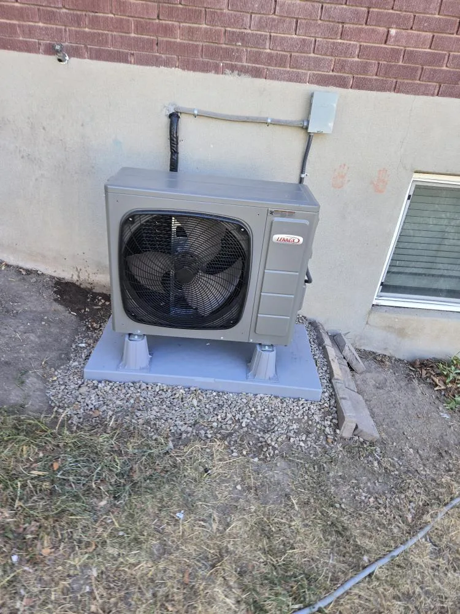

385.853.8116

Same-Day Response. Upfront pricing. Certified technicians.

When your air conditioner fails in the middle of a Wasatch Front heat wave, you need a company that can be there fast, with clear pricing and lasting solutions that keep you cool when you need it most. At Sunny Home Services, we offer expert, technology-driven air conditioner services across the Wasatch Front. Whether you need an emergency repair, routine maintenance, or a new installation, you can count on our team to show up on time, provide honest pricing, and recommend real solutions without the pressure.

We offer a full range of air conditioner services to keep your Wasatch Front home cool through the summer heat waves and triple-digit afternoons. Our certified technicians handle everything from quick repairs and preventative maintenance to full system installs and same-day emergency services. We show up on time, keep you informed every step of the way, and provide technology-driven solutions that keep your home safe, comfortable, and efficient.

Noticing strange smells, unusual sounds, or uneven temperatures? Our certified air conditioning contractors handle repairs fast, with accurate diagnostics and lasting solutions that restore comfort to your Utah home.
Learn More ›
Our AC maintenance services keep your system clean, efficient, and reliable, so you have peace of mind that it is ready to handle whatever the Utah summer brings. With an annual tune-up from our team, you will boost efficiency, prevent unexpected breakdowns, and get the most out of your investment.
Learn More ›
When the Wasatch Front heat becomes too much for your system to handle, we are ready to help with AC replacements and new installations. We will help you size and select the right system for your home and install it right the first time.
Learn More ›
Arrive home to no cool air on the hottest day of the year? We offer same-day AC service for no-cool emergencies so your family is not left sweating in the summer heat.
Learn More ›When you schedule AC service with Sunny Home Services, you will get clear communication, honest pricing, and professional service from start to finish. Before we even arrive, we let you know who is coming and when they will get there, so you do not have to worry about waiting around all day. You get a clear arrival window, a heads-up text with your air conditioning technician's photo, and a short bio before they even pull into your driveway.
Once on site, your technician will inspect the system, explain what is going on, and show you flat-rate pricing for you to approve before beginning any work, so you do not get a surprise bill that catches you off guard. Because we work on Wasatch Front homes year-round, we can spot common issues like undersized units struggling with the intense summer heat and aging systems in Salt Lake Valley builds that can leave you with rising indoor temperatures. Every job is also documented with photos, so you can see the before-and-after for yourself.
All of our technicians are drug-tested, background-checked, uniformed, and certified, so you can feel comfortable having them in your home. We are not there to pressure you into repairs or replacements you do not need, just to provide solutions that keep your family comfortable through the season.


When Wasatch Front homeowners need cooling services they can trust, we are the team they turn to for help. We combine enterprise-grade systems with genuine service, providing the speed and accountability that the large out-of-state chains and small shops cannot match. You will get the speed and polish of a national company and friendly, local service that makes you feel like a neighbor instead of a ticket number.
Here is why we are the top pick for local AC companies:

When the next heat wave leaves you sweating inside, contact our team for AC services you can trust. We will carefully diagnose your system, walk you through your options in clear terms, and provide lasting fixes designed for Utah summers. Whether you are dealing with a broken compressor, a clogged filter, or an aging system, you can count on us for repairs, installations, and maintenance done right.
Call us or book online to schedule AC services for your Wasatch Front home today.